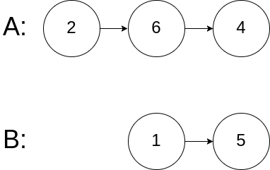
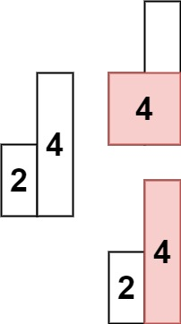

整数
简单
给定两个整数 a 和 b ，求它们的除法的商
a/b ，要求不得使用乘号 '*'、除号
'/' 以及求余符号 '%' 。
注意：
整数除法的结果应当截去（truncate）其小数部分，例如：truncate(8.345) = 8
以及 truncate(-2.7335) = -2
假设我们的环境只能存储 32 位有符号整数，其数值范围是
[−231, 231−1]。本题中，如果除法结果溢出，则返回
231 − 1
示例 1：
1 2 3 输入：a = 15, b = 2 输出：7 解释：15/2 = truncate(7.5) = 7
示例 2：
1 2 3 输入：a = 7, b = -3 输出：-2 解释：7/-3 = truncate(-2.33333..) = -2
示例 3：
示例 4：
算法分析
快速乘 + 二分
1 2 3 4 5 6 7 8 9 10 11 12 13 14 15 16 17 18 19 20 21 22 23 24 25 26 27 28 29 30 31 32 33 34 35 36 37 38 39 40 41 42 43 44 45 46 47 48 49 50 51 52 53 54 55 56 57 58 59 60 61 62 63 64 65 66 67 68 69 70 71 72 73 74 75 76 77 78 79 80 81 82 83 class Solution { public int divide (int a, int b) { if (a == Integer.MIN_VALUE){ if (b == 1 ){ return Integer.MIN_VALUE; } if (b == -1 ){ return Integer.MAX_VALUE; } } if (b == Integer.MIN_VALUE){ return a == Integer.MIN_VALUE ? 1 : 0 ; } if (a == 0 ){ return 0 ; } boolean rev = false ; if (a > 0 ) { a = -a; rev = !rev; } if (b > 0 ) { b = -b; rev = !rev; } int left = 1 , right = Integer.MAX_VALUE, ans = 0 ; while (left <= right) { int mid = left + ((right - left) >> 1 ); boolean check = quickAdd(b, mid, a); if (check) { ans = mid; if (mid == Integer.MAX_VALUE) { break ; } left = mid + 1 ; } else { right = mid - 1 ; } } return rev ? -ans : ans; } public boolean quickAdd (int y, int z, int x) { int result = 0 ; int add = y; while (z != 0 ){ if ((z & 1 ) != 0 ){ if (result < x - add){ return false ; } result += add; } if (z != 1 ){ if (add < x - add){ return false ; } add += add; } z >>= 1 ; } return true ; } }
给定两个 01 字符串 a 和 b
，请计算它们的和，并以二进制字符串的形式输出。
输入为 非空 字符串且只包含数字 1 和
0。
示例 1:
1 2 输入: a = "11", b = "10" 输出: "101"
示例 2:
1 2 输入: a = "1010", b = "1011" 输出: "10101"
提示：
每个字符串仅由字符 '0' 或 '1' 组成。
1 <= a.length, b.length <= 10^4字符串如果不是 "0" ，就都不含前导零。
算法分析
模拟加
1 2 3 4 5 6 7 8 9 10 11 12 13 14 15 16 17 18 19 class Solution { public String addBinary (String a, String b) { StringBuilder ans = new StringBuilder (); int n = Math.max(a.length(), b.length()); int carry = 0 ; for (int i = 0 ; i < n; i++) { carry += i < a.length() ? (a.charAt(a.length() - 1 - i) - '0' ) : 0 ; carry += i < b.length() ? (b.charAt(b.length() - 1 - i) - '0' ) : 0 ; ans.append((char )(carry % 2 + '0' )); carry /= 2 ; } if (carry > 0 ){ ans.append((char )(carry % 2 + '0' )); } return ans.reverse().toString(); } }
给你一个整数 n ，对于 0 <= i <= n
中的每个 i ，计算其二进制表示中 1
的个数n + 1 的数组
ans 作为答案。
示例 1：
1 2 3 4 5 6 输入：n = 2 输出：[0,1,1] 解释： 0 --> 0 1 --> 1 2 --> 10
算法分析
简单循环与运算
传统的处理数的方式：拿当前的数和1进行&判断最后一位是不是1，然后二进制右移一下，判断下一位...
1 2 3 4 5 6 7 8 9 10 11 12 13 14 15 16 17 18 19 class Solution { public int [] countBits(int n) { int [] ans = new int [n+1 ]; ans[0 ] = 0 ; for (int i = 1 ; i <= n; i++){ int cur = i; while (cur > 0 ){ if ((cur & 1 ) == 1 ){ ans[i]++; } cur >>= 1 ; } } return ans; } }
性能
image-20230828100829993
动态规划-最高有效位
一个整数 i 如果是2的n次幂，那他只有最高位为1。那我们把 \([2^n , 2^{n+1}]\) 里的数x，减去$ 2 ^ n$
，这样退阶到子问题阶层，然后实际1的个数比这个子问题多一（因为最高位基于
$ 2 ^ n$)
判断整数是否为2的n次幂的方法： i & (i - 1) == 0
1 2 3 4 5 6 7 8 9 10 11 12 13 14 15 16 class Solution { public int [] countBits(int n) { int [] ans = new int [n + 1 ]; ans[0 ] = 0 ; int highBit = 0 ; for (int i = 1 ; i <= n; i++){ if ((i & (i-1 )) == 0 ){ highBit = i; } ans[i] = ans[i - highBit] + 1 ; } return ans; } }
给定一个已按照 升序排列 的整数数组
numbers ，请你从数组中找出两个数满足相加之和等于目标数
target 。
函数应该以长度为 2
的整数数组的形式返回这两个数的下标值。 numbers
的下标 从 0 开始计数 ，所以答案数组应当满足
0 <= answer[0] < answer[1] < numbers.length 。
假设数组中存在且只存在一对符合条件的数字，同时一个数字不能使用两次。
示例 1：
1 2 3 输入：numbers = [1,2,4,6,10], target = 8 输出：[1,3] 解释：2 与 6 之和等于目标数 8 。因此 index1 = 1, index2 = 3 。
示例 2：
1 2 输入：numbers = [2,3,4], target = 6 输出：[0,2]
示例 3：
1 2 输入：numbers = [-1,0], target = -1 输出：[0,1]
双指针
1 2 3 4 5 6 7 8 9 10 11 12 13 14 15 16 17 18 class Solution { public int [] twoSum(int [] numbers, int target) { int left = 0 ; int right = numbers.length - 1 ; while (left <right){ if (numbers[left] + numbers[right] > target){ right--; }else if (numbers[left] + numbers[right] < target){ left++; }else { return new int []{left, right}; } } return new int []{}; } }
中等
给你一个整数数组 nums ，除某个元素仅出现
一次 外，其余每个元素都恰出现 三次
。 请你找出并返回那个只出现了一次的元素。
示例 1：
1 2 输入：nums = [2,2,3,2] 输出：3
示例 2：
1 2 输入：nums = [0,1,0,1,0,1,100] 输出：100
确定每一个二进制位
如果数字出现三次，它的全部二进制位置于0，忽略不计
1 2 3 4 5 6 7 8 9 10 11 12 13 14 15 16 17 class Solution { public int singleNumber (int [] nums) { int ans = 0 ; for (int i = 0 ; i < 32 ; i++) { int val = 0 ; for (int num : nums) { val += ((num >> i) & 1 ); } if (val % 3 != 0 ){ ans |= (1 << i); } } return ans; } }
给定一个字符串数组 words，请计算当两个字符串
words[i] 和 words[j]
不包含相同字符时，它们长度的乘积的最大值。假设字符串中只包含英语的小写字母。如果没有不包含相同字符的一对字符串，返回
0。
示例 1:
1 2 3 输入: words = ["abcw","baz","foo","bar","fxyz","abcdef"] 输出: 16 解释: 这两个单词为 "abcw", "fxyz"。它们不包含相同字符，且长度的乘积最大。
示例 2:
1 2 3 输入: words = ["a","ab","abc","d","cd","bcd","abcd"] 输出: 4 解释: 这两个单词为 "ab", "cd"。
示例 3:
1 2 3 输入: words = ["a","aa","aaa","aaaa"] 输出: 0 解释: 不存在这样的两个单词。
提示：
2 <= words.length <= 10001 <= words[i].length <= 1000words[i] 仅包含小写字母
位运算压缩存储
1 2 3 4 5 6 7 8 9 10 11 12 13 14 15 16 17 18 19 20 21 22 23 24 public int maxProduct (String[] words) { int n = words.length; int [] masks = new int [n]; for (int i = 0 ; i < n; i++) { String word = words[i]; int wordLength = word.length(); for (int j = 0 ; j < wordLength; j++) { masks[i] |= 1 << (word.charAt(j) - 'a' ); } } int ans = 0 ; for (int i = 0 ; i < n; i++) { for (int j = i + 1 ; j < n; j++) { if ((masks[i] & masks[j]) == 0 ){ ans = Math.max(ans, words[i].length() * words[j].length()); } } } return ans; }
数组
简单
给你一个整数数组 nums ，请计算数组的
中心下标 。
数组 中心下标
是数组的一个下标，其左侧所有元素相加的和等于右侧所有元素相加的和。
如果中心下标位于数组最左端，那么左侧数之和视为 0
，因为在下标的左侧不存在元素。这一点对于中心下标位于数组最右端同样适用。
如果数组有多个中心下标，应该返回 最靠近左边
的那一个。如果数组不存在中心下标，返回 -1 。
示例 1：
1 2 3 4 5 6 输入：nums = [1,7,3,6,5,6] 输出：3 解释： 中心下标是 3 。 左侧数之和 sum = nums[0] + nums[1] + nums[2] = 1 + 7 + 3 = 11 ， 右侧数之和 sum = nums[4] + nums[5] = 5 + 6 = 11 ，二者相等。
示例 2：
1 2 3 4 输入：nums = [1, 2, 3] 输出：-1 解释： 数组中不存在满足此条件的中心下标。
示例 3：
1 2 3 4 5 6 输入：nums = [2, 1, -1] 输出：0 解释： 中心下标是 0 。 左侧数之和 sum = 0 ，（下标 0 左侧不存在元素）， 右侧数之和 sum = nums[1] + nums[2] = 1 + -1 = 0 。
提示：
1 <= nums.length <= 10^4-1000 <= nums[i] <= 1000
算法分析
前缀和
但是不用前缀和数组，只需前半段的和即可
1 2 3 4 5 6 7 8 9 10 11 12 13 14 15 16 17 class Solution { public int pivotIndex (int [] nums) { int n = nums.length; int total = Arrays.stream(nums).sum(); int sum = 0 ; for (int i = 0 ; i < n; i++) { if (2 * sum + nums[i] == total){ return i; } sum += nums[i]; } return -1 ; } }
中等
给你一个整数数组 nums ，判断是否存在三元组
[nums[i], nums[j], nums[k]] 满足
i != j、i != k 且 j != k
，同时还满足 nums[i] + nums[j] + nums[k] == 0 。请
你返回所有和为 0 且不重复的三元组。
注意： 答案中不可以包含重复的三元组。
示例 1：
1 2 3 4 5 6 7 8 输入：nums = [-1,0,1,2,-1,-4] 输出：[[-1,-1,2],[-1,0,1]] 解释： nums[0] + nums[1] + nums[2] = (-1) + 0 + 1 = 0 。 nums[1] + nums[2] + nums[4] = 0 + 1 + (-1) = 0 。 nums[0] + nums[3] + nums[4] = (-1) + 2 + (-1) = 0 。 不同的三元组是 [-1,0,1] 和 [-1,-1,2] 。 注意，输出的顺序和三元组的顺序并不重要。
示例 2：
1 2 3 输入：nums = [0,1,1] 输出：[] 解释：唯一可能的三元组和不为 0 。
示例 3：
1 2 3 输入：nums = [0,0,0] 输出：[[0,0,0]] 解释：唯一可能的三元组和为 0 。
算法分析
对向指针
这题注意去重，排序过后，对于相同的相邻元素的处理：直接跳过即可。
1 2 3 4 5 6 7 8 9 10 11 12 13 14 15 16 17 18 19 20 21 22 23 24 25 26 27 28 29 30 31 32 33 34 35 36 37 class Solution { public List<List<Integer>> threeSum (int [] nums) { int n = nums.length; List<List<Integer>> ans = new ArrayList <>(); if (n == 0 ){ return ans; } Arrays.sort(nums); for (int i = 0 ; i < n; i++) { if (nums[i] > 0 ){ break ; } int left = i + 1 ; int right = n - 1 ; if (i > 0 && nums[i] == nums[i-1 ]) continue ; while (left < right){ int sum = nums[i] + nums[left] + nums[right]; if (sum == 0 ) { ans.add(Arrays.asList(nums[i], nums[left], nums[right])); while (left < right && nums[left] == nums[left + 1 ]) left++; while (left < right && nums[right] == nums[right - 1 ]) right--; left++; right--; }else if (sum < 0 ){ left++; }else { right--; } } } return ans; } }
给定一个含有 n 个正整数的数组和一个正整数
target 。
找出该数组中满足其和 ≥ target 的长度最小的
连续子数组
[numsl, numsl+1, ..., numsr-1, numsr]
，并返回其长度。 如果不存在符合条件的子数组，返回
0 。
示例 1：
1 2 3 输入：target = 7, nums = [2,3,1,2,4,3] 输出：2 解释：子数组 [4,3] 是该条件下的长度最小的子数组。
示例 2：
1 2 输入：target = 4, nums = [1,4,4] 输出：1
示例 3：
1 2 输入：target = 11, nums = [1,1,1,1,1,1,1,1] 输出：0
算法分析
本题最直观解法就是以每一个元素为起点，利用第二重循环去找sum之和，一旦比target大（或者相等）就记录这次窗口的大小，继续循环...
后续可以优化为滑动窗口
暴力
1 2 3 4 5 6 7 8 9 10 11 12 13 14 15 16 17 18 19 20 21 class Solution { public int minSubArrayLen (int target, int [] nums) { int n = nums.length; int ans = Integer.MAX_VALUE; for (int i = 0 ; i < n; i++) { int sum = nums[i]; int count = 1 ; int j = i; while (++j < n && sum < target){ sum += nums[j++]; count++; } if (sum >= target){ ans = Math.min(ans, count); } } return ans == Integer.MAX_VALUE ? 0 : ans; } }
滑动窗口
1 2 3 4 5 6 7 8 9 10 11 12 13 14 15 16 17 18 19 class Solution { public int minSubArrayLen (int target, int [] nums) { int n = nums.length; int ans = Integer.MAX_VALUE; int start = 0 ,end = 0 ; int sum = 0 ; while (end < n){ sum += nums[end]; while (sum >= target){ ans = Math.min(ans, end - start + 1 ); sum -= nums[start++]; } end++; } return ans == Integer.MAX_VALUE ? 0 : ans; } }
前缀和 + 二分查找
1 2 3 4 5 6 7 8 9 10 11 12 13 14 15 16 17 18 19 20 21 22 23 24 25 26 27 class Solution { public int minSubArrayLen (int target, int [] nums) { int n = nums.length; int ans = Integer.MAX_VALUE; int [] sums = new int [n + 1 ]; for (int i = 1 ; i < (n + 1 ); i++) { sums[i] = sums[i-1 ] + nums[i]; } for (int i = 1 ; i <= n; i++) { int targetBinary = target + sums[i-1 ]; int idx = Arrays.binarySearch(sums, targetBinary); if (idx < 0 ){ idx = -idx -1 ; } if (idx >= 0 && idx <= n){ ans = Math.min(idx - (i-1 ), ans); } } return ans == Integer.MAX_VALUE ? 0 : ans; } }
给定一个正整数数组 nums和整数 k
，请找出该数组内乘积小于 k 的连续的子数组的个数。
示例 1:
1 2 3 4 输入: nums = [10,5,2,6], k = 100 输出: 8 解释: 8 个乘积小于 100 的子数组分别为: [10], [5], [2], [6], [10,5], [5,2], [2,6], [5,2,6]。 需要注意的是 [10,5,2] 并不是乘积小于100的子数组。
示例 2:
1 2 输入: nums = [1,2,3], k = 0 输出: 0
算法分析
滑动窗口
1 2 3 4 5 6 7 8 9 10 11 12 13 14 15 16 17 18 19 20 21 class Solution { public int numSubarrayProductLessThanK (int [] nums, int k) { if (k == 0 ){ return 0 ; } int n = nums.length; int start = 0 , end = 0 ; int multi = 1 ; int ans = 0 ; while (end < n){ multi *= nums[end]; while (start <= end && multi >= k){ multi /= nums[start++]; } ans += end - start + 1 ; end++; } return ans; } }
去重 ： 假如数组是[1,2,3,4,5] k = 10。
滑动窗口大小为1，乘积是1，1 < 10，因此需要加入结果集，res += end
- start + 1 = 0 - 0 + 1 = 1 [1];
滑动窗口大小为2，乘积是2，2 < 10，因此需要加入结果集，res += end
- start + 1 = 1 - 0 + 1 = 2 [1,2] [2];
滑动窗口大小为3，乘积是6，6 < 10，因此需要加入结果集，res += end
- start + 1 = 2 - 0 + 1 = 3 [1,2,3] [2,3] [3];
关于为什么子数组数目为j-1+1。我们采用滑动窗口的思路其实是枚举子数组的右端点，然后来找到满足条件的最小左端点。也即当得到满足条件的窗口时，就意味着得到了以
j
作为右端点时满足条件的左端点的下标最小值 。那么此时满足条件的子数组个数当然就等于窗口能所有能作为左端点的位置个数，即j-i+1。
给定一个整数数组和一个整数 k
， 请找到该数组中和为 k
的连续子数组的个数。
示例 1：
1 2 3 输入:nums = [1,1,1], k = 2 输出: 2 解释: 此题 [1,1] 与 [1,1] 为两种不同的情况
示例 2：
1 2 输入:nums = [1,2,3], k = 3 输出: 2
算法分析
本题存在负数，如果使用滑动窗口，会出现越滑越少的情况，不满足滑动窗口使用的特性
暴力法
1 2 3 4 5 6 7 8 9 10 11 12 13 14 15 16 17 class Solution { public int subarraySum (int [] nums, int k) { int res = 0 ; int n = nums.length; for (int start = 0 ; start < n; start++) { int sum = 0 ; for (int end = start; end > 0 ; end--) { sum += nums[end]; if (sum == k){ res++; } } } return res; } }
前缀和+哈希表
假设已知前缀和数组pre，那么
[j...i]中子数组和为K的个数 转化为
pre[i] - pre[j - 1] == kpre[j-1] == pre[i] - k
。
考虑以 i 结尾的和为 k 的连续子数组个数时只要统计有多少个前缀和为
pre[i] - k 的 pre[j-1] 也就是j-1的个数也就是j的个数。
借助哈希表，以pre和为键，出现次数为值。
1 2 3 4 5 6 7 8 9 10 11 12 13 14 15 16 17 18 class Solution { public int subarraySum (int [] nums, int k) { int res = 0 ; int n = nums.length; int pre = 0 ; Map<Integer, Integer> map = new HashMap <>(); map.put(0 , 1 ); for (int i = 0 ; i < n; i++) { pre += nums[i]; if (map.containsKey(pre - k)){ res += map.get(pre - k); } map.put(pre, map.getOrDefault(pre, 0 ) + 1 ); } return res; } }
给定一个二进制数组 nums , 找到含有相同数量的
0 和 1
的最长连续子数组，并返回该子数组的长度。
示例 1：
1 2 3 输入: nums = [0,1] 输出: 2 说明: [0, 1] 是具有相同数量 0 和 1 的最长连续子数组。
示例 2：
1 2 3 输入: nums = [0,1,0] 输出: 2 说明: [0, 1] (或 [1, 0]) 是具有相同数量 0 和 1 的最长连续子数组。
提示：
1 <= nums.length <= 10^5nums[i] 不是 0 就是 1
算法分析
如果把0视作-1，那就是求和为0的子数组的最大长度 ，题目瞬间回到LCR010
哈希表+前缀和
1 2 3 4 5 6 7 8 9 10 11 12 13 14 15 16 17 18 19 20 21 22 23 24 25 class Solution { public int findMaxLength (int [] nums) { int res = 0 ; int n = nums.length; int pre = 0 ; Map<Integer, Integer> map = new HashMap <>(); map.put(pre, -1 ); for (int i = 0 ; i < n; i++) { if (nums[i] == 1 ){ pre++; }else { pre--; } if (map.containsKey(pre)){ res = Math.max(res, i - map.get(pre)); }else { map.put(pre, i); } } return res; } }
给定一个二维矩阵 matrix，以下类型的多个请求：
计算其子矩形范围内元素的总和，该子矩阵的左上角为
(row1, col1) ，右下角为 (row2, col2) 。
实现 NumMatrix 类：
NumMatrix(int[][] matrix) 给定整数矩阵
matrix 进行初始化int sumRegion(int row1, int col1, int row2, int col2)
返回左上角 (row1, col1) 、右下角 (row2, col2)
的子矩阵的元素总和。
示例 1：
img
1 2 3 4 5 6 7 8 9 10 11 输入: ["NumMatrix","sumRegion","sumRegion","sumRegion"] [[[[3,0,1,4,2],[5,6,3,2,1],[1,2,0,1,5],[4,1,0,1,7],[1,0,3,0,5]]],[2,1,4,3],[1,1,2,2],[1,2,2,4]] 输出: [null, 8, 11, 12] 解释: NumMatrix numMatrix = new NumMatrix([[3,0,1,4,2],[5,6,3,2,1],[1,2,0,1,5],[4,1,0,1,7],[1,0,3,0,5]]]); numMatrix.sumRegion(2, 1, 4, 3); // return 8 (红色矩形框的元素总和) numMatrix.sumRegion(1, 1, 2, 2); // return 11 (绿色矩形框的元素总和) numMatrix.sumRegion(1, 2, 2, 4); // return 12 (蓝色矩形框的元素总和)
算法分析
一维前缀和
1 2 3 4 5 6 7 8 9 10 11 12 13 14 15 16 17 18 19 20 21 22 23 24 25 26 class NumMatrix { int [][] sums; public NumMatrix (int [][] matrix) { int m = matrix.length; if (m > 0 ){ int n = matrix[0 ].length; sums = new int [m][n + 1 ]; for (int i = 0 ; i < m; i++) { for (int j = 0 ; j < n; j++) { sums[i][j + 1 ] = sums[i][j] + matrix[i][j]; } } } } public int sumRegion (int row1, int col1, int row2, int col2) { int sum = 0 ; for (int i = row1; i <= row2; i++) { sum += sums[i][col2 + 1 ] - sums[i][col1]; } return sum; } }
字符串
简单
给定一个字符串 s ，验证 s 是否是
回文串
，只考虑字母和数字字符，可以忽略字母的大小写。
本题中，将空字符串定义为有效的 回文串 。
示例 1:
1 2 3 输入: s = "A man, a plan, a canal: Panama" 输出: true 解释："amanaplanacanalpanama" 是回文串
示例 2:
1 2 3 输入: s = "race a car" 输出: false 解释："raceacar" 不是回文串
提示：
1 <= s.length <= 2 * 10^5字符串 s 由 ASCII 字符组成
算法分析
很明显是双指针的题目，可以事先对字符串进行最小化处理，但是也可以不用，这样空间复杂度就来到了O(1)
双指针 + 原地判断
1 2 3 4 5 6 7 8 9 10 11 12 13 14 15 16 17 18 19 20 21 22 23 24 class Solution { public boolean isPalindrome (String s) { int n = s.length(); int left = 0 ; int right = s.length() - 1 ; while (left < right){ while (left < right && !Character.isLetterOrDigit(s.charAt(left))) left++; while (left < right && !Character.isLetterOrDigit(s.charAt(right)))right--; if (Character.toLowerCase(s.charAt(left)) != Character.toLowerCase(s.charAt(right))){ return false ; } left++; right--; } return true ; } }
给定一个非空字符串 s，请判断如果 最多
从字符串中删除一个字符能否得到一个回文字符串。
示例 1:
示例 2:
1 2 3 输入: s = "abca" 输出: true 解释: 可以删除 "c" 字符 或者 "b" 字符
示例 3:
算法分析
贪心
1 2 3 4 5 6 7 8 9 10 11 12 13 14 15 16 17 18 19 20 21 22 23 24 25 26 27 28 29 30 31 32 33 34 35 36 37 38 class Solution { public boolean validPalindrome (String s) { int low = 0 , high = s.length() - 1 ; while (low < high){ char c1 = s.charAt(low); char c2 = s.charAt(high); if (c1 == c2){ low++; high--; }else { return validPalindrome(s,low + 1 , high) || validPalindrome(s,low,high - 1 ); } } return true ; } public boolean validPalindrome (String s, int low, int high) { for (int i = low, j = high; i < j; ++i, --j) { char c1 = s.charAt(i), c2 = s.charAt(j); if (c1 != c2) { return false ; } } return true ; } }
中等
给定两个字符串 s1 和 s2，写一个函数来判断
s2 是否包含 s1 的某个变位词。
换句话说，第一个字符串的排列之一是第二个字符串的
子串 。
示例 1：
1 2 3 输入: s1 = "ab" s2 = "eidbaooo" 输出: True 解释: s2 包含 s1 的排列之一 ("ba").
示例 2：
1 2 输入: s1= "ab" s2 = "eidboaoo" 输出: False
提示：
1 <= s1.length, s2.length <= 10^4s1 和 s2 仅包含小写字母
算法分析
固定长度滑动窗口 + hash表
1 2 3 4 5 6 7 8 9 10 11 12 13 14 15 16 17 18 19 20 21 22 23 24 25 26 class Solution { public boolean checkInclusion (String s1, String s2) { int n = s1.length(); int m = s2.length(); if (n > m){ return false ; } int [] hash1 = new int [26 ]; int [] hash2 = new int [26 ]; for (int i = 0 ; i < n; i++) { hash1[s1.charAt(i) - 'a' ]++; hash2[s2.charAt(i) - 'a' ]++; } if (Arrays.equals(hash1, hash2)) return true ; for (int i = n; i < m; i++) { hash2[s2.charAt(i) - 'a' ]++; hash2[s2.charAt(i - n) - 'a' ]--; if (Arrays.equals(hash1, hash2)){ return true ; } } return false ; } }
给定两个字符串 s 和 p，找到 s
中所有 p 的 变位词
的子串，返回这些子串的起始索引。不考虑答案输出的顺序。
变位词 指字母相同，但排列不同的字符串。
示例 1：
1 2 3 4 5 输入: s = "cbaebabacd", p = "abc" 输出: [0,6] 解释: 起始索引等于 0 的子串是 "cba", 它是 "abc" 的变位词。 起始索引等于 6 的子串是 "bac", 它是 "abc" 的变位词。
示例 2：
1 2 3 4 5 6 输入: s = "abab", p = "ab" 输出: [0,1,2] 解释: 起始索引等于 0 的子串是 "ab", 它是 "ab" 的变位词。 起始索引等于 1 的子串是 "ba", 它是 "ab" 的变位词。 起始索引等于 2 的子串是 "ab", 它是 "ab" 的变位词。
提示:
1 <= s.length, p.length <= 3 * 10^4s 和 p 仅包含小写字母
算法分析
涉及到字母异位词，字符串排列匹配子串的，大多都是滑动窗口 +
哈希表解决
固定长度滑动窗口 + hash表
一个哈希表足以，相同的字符，s有就++，p有就--，为0表示s与p匹配
1 2 3 4 5 6 7 8 9 10 11 12 13 14 15 16 17 18 19 20 21 22 23 24 25 26 27 28 29 30 31 32 33 34 35 36 37 38 39 40 41 42 43 44 45 class Solution { public List<Integer> findAnagrams (String s, String p) { int n = p.length(); int m = s.length(); List<Integer> res = new ArrayList <>(); if (n > m){ return res; } int [] hash = new int [26 ]; for (int i = 0 ; i < n; i++) { hash[s.charAt(i) - 'a' ]++; hash[p.charAt(i) - 'a' ]--; } int differ = 0 ; for (int i = 0 ; i < 26 ; i++) { if (hash[i] != 0 ){ differ++; } } if (differ == 0 ){ res.add(0 ); } for (int i = n; i < m; i++) { if (hash[s.charAt(i - n) - 'a' ] == 0 ){ differ++; }else if (hash[s.charAt(i - n) - 'a' ] == 1 ){ differ--; } hash[s.charAt(i - n) - 'a' ]--; if (hash[s.charAt(i) - 'a' ] == -1 ){ differ--; }else if (hash[s.charAt(i) - 'a' ] == 0 ){ differ++; } hash[s.charAt(i) - 'a' ]++; if (differ == 0 ){ res.add(i - n + 1 ); } } return res; } }
给定一个字符串 s ，请你找出其中不含有重复字符的
最长连续子字符串 的长度。
示例 1:
1 2 3 输入: s = "abcabcbb" 输出: 3 解释: 因为无重复字符的最长子字符串是 "abc"，所以其长度为 3。
示例 2:
1 2 3 输入: s = "bbbbb" 输出: 1 解释: 因为无重复字符的最长子字符串是 "b"，所以其长度为 1。
示例 3:
1 2 3 4 输入: s = "pwwkew" 输出: 3 解释: 因为无重复字符的最长子串是 "wke"，所以其长度为 3。 请注意，你的答案必须是 子串 的长度，"pwke" 是一个子序列，不是子串。
示例 4:
提示：
0 <= s.length <= 5 * 10^4s 由英文字母、数字、符号和空格组成
算法分析
滑动窗口 + 哈希表
1 2 3 4 5 6 7 8 9 10 11 12 13 14 15 16 17 18 19 20 21 22 23 24 25 26 27 28 29 30 31 32 class Solution { public int lengthOfLongestSubstring (String s) { int res = 0 ; int n = s.length(); if (n == 0 ){ return res; } int left = 0 ; int right = 0 ; Map<Character, Integer> hash = new HashMap <>(); while (left <= right && right < n){ while (right < n && !hash.containsKey(s.charAt(right))){ hash.put(s.charAt(right), right); right++; } res = Math.max(res, right - left); if (right >= n){ break ; } Integer lastIdx = hash.get(s.charAt(right)); while (left < lastIdx + 1 ){ hash.remove(s.charAt(left++)); } hash.put(s.charAt(right), right); right++; } return res; } }
滑动窗口 + 哈希表(优化)
上面写的时候有点模拟的味道了，内嵌循环可以取消的。
1 2 3 4 5 6 7 8 9 10 11 12 13 14 15 16 17 18 19 20 21 22 23 24 25 26 class Solution { public int lengthOfLongestSubstring (String s) { int res = 0 ; int n = s.length(); if (n == 0 ){ return res; } int left = 0 ; int right = 0 ; Map<Character, Integer> hash = new HashMap <>(); while (right < n){ if (!hash.containsKey(s.charAt(right))){ hash.put(s.charAt(right), right); }else { left = Math.max(left, hash.get(s.charAt(right)) + 1 ); hash.put(s.charAt(right), right); } res = Math.max(res, right - left + 1 ); right++; } return res; } }
给定一个字符串 s
，请计算这个字符串中有多少个回文子字符串。
具有不同开始位置或结束位置的子串，即使是由相同的字符组成，也会被视作不同的子串。
示例 1：
1 2 3 输入：s = "abc" 输出：3 解释：三个回文子串: "a", "b", "c"
示例 2：
1 2 3 输入：s = "aaa" 输出：6 解释：6个回文子串: "a", "a", "a", "aa", "aa", "aaa"
提示：
1 <= s.length <= 1000s 由小写英文字母组成
算法分析
二维动态规划
dp[i][j]表示子串[i,j]是否是回文子串
1 2 3 4 5 6 7 8 9 10 11 12 13 14 15 16 17 18 19 20 class Solution { public int countSubstrings (String s) { int n = s.length(); boolean [][] dp = new boolean [n][n]; for (int i = 0 ; i < n; i++) { dp[i][i] = true ; } int res = n; for (int i = n-1 ; i >= 0 ; i--){ for (int j = i + 1 ; j < n; j++) { if (s.charAt(i) == s.charAt(j) && (j ==i+1 || dp[i + 1 ][j - 1 ])){ dp[i][j] = true ; res++; } } } return res; } }
困难
给定两个字符串 s 和 t 。返回 s
中包含 t 的所有字符的最短子字符串。如果 s
中不存在符合条件的子字符串，则返回空字符串 "" 。
如果 s 中存在多个符合条件的子字符串，返回任意一个。
注意： 对于 t
中重复字符，我们寻找的子字符串中该字符数量必须不少于 t
中该字符数量。
示例 1：
1 2 3 输入：s = "ADOBECODEBANC", t = "ABC" 输出："BANC" 解释：最短子字符串 "BANC" 包含了字符串 t 的所有字符 'A'、'B'、'C'
示例 2：
1 2 输入：s = "a", t = "a" 输出："a"
示例 3：
1 2 3 输入：s = "a", t = "aa" 输出："" 解释：t 中两个字符 'a' 均应包含在 s 的子串中，因此没有符合条件的子字符串，返回空字符串。
提示：
1 <= s.length, t.length <= 10^5s 和 t 由英文字母组成
算法分析
哈希表+滑动窗口
1 2 3 4 5 6 7 8 9 10 11 12 13 14 15 16 17 18 19 20 21 22 23 24 25 26 27 28 29 30 31 32 33 34 35 36 37 38 39 40 class Solution { public String minWindow (String s, String t) { int m = s.length(); int n = t.length(); if (n > m){ return "" ; } int [] needHash = new int [128 ]; for (int i = 0 ; i < n; i++) { needHash[t.charAt(i)]++; } int left = 0 ; int right = 0 ; int needCnt = n; int size = Integer.MAX_VALUE; int beginIndex = -1 ; while (right < m){ char c = s.charAt(right); if (needHash[c] > 0 ){ needCnt--; } needHash[c]--; if (needCnt == 0 ){ while (left < right && needHash[s.charAt(left)] < 0 ) needHash[s.charAt(left++)]++; if (size > right - left + 1 ){ size = right - left + 1 ; beginIndex = left; } needCnt++; needHash[s.charAt(left++)]++; } right++; } return size == Integer.MAX_VALUE? "" : s.substring(beginIndex, size); } }
链表
简单
给定两个单链表的头节点 headA 和 headB
，请找出并返回两个单链表相交的起始节点。如果两个链表没有交点，返回
null 。
图示两个链表在节点 c1 开始相交：
题目数据 保证 整个链式结构中不存在环。
注意 ，函数返回结果后，链表必须
保持其原始结构 。
示例 1：
1 2 3 4 5 输入：intersectVal = 8, listA = [4,1,8,4,5], listB = [5,0,1,8,4,5], skipA = 2, skipB = 3 输出：Intersected at '8' 解释：相交节点的值为 8 （注意，如果两个链表相交则不能为 0）。 从各自的表头开始算起，链表 A 为 [4,1,8,4,5]，链表 B 为 [5,0,1,8,4,5]。 在 A 中，相交节点前有 2 个节点；在 B 中，相交节点前有 3 个节点。
示例 2：
1 2 3 4 5 输入：intersectVal = 2, listA = [0,9,1,2,4], listB = [3,2,4], skipA = 3, skipB = 1 输出：Intersected at '2' 解释：相交节点的值为 2 （注意，如果两个链表相交则不能为 0）。 从各自的表头开始算起，链表 A 为 [0,9,1,2,4]，链表 B 为 [3,2,4]。 在 A 中，相交节点前有 3 个节点；在 B 中，相交节点前有 1 个节点。
示例 3：

1 2 3 4 5 输入：intersectVal = 0, listA = [2,6,4], listB = [1,5], skipA = 3, skipB = 2 输出：null 解释：从各自的表头开始算起，链表 A 为 [2,6,4]，链表 B 为 [1,5]。 由于这两个链表不相交，所以 intersectVal 必须为 0，而 skipA 和 skipB 可以是任意值。 这两个链表不相交，因此返回 null 。
提示：
listA 中节点数目为 mlistB 中节点数目为 n0 <= m, n <= 3 * 10^41 <= Node.val <= 10^50 <= skipA <= m0 <= skipB <= n如果 listA 和 listB
没有交点，intersectVal 为 0
如果 listA 和 listB
有交点，intersectVal == listA[skipA + 1] == listB[skipB + 1]
算法分析
双指针 + 数学
数学思路：
两个指针p、q分别指向headA、headB，同时遍历，如果p || q
到达各自链表终点，则把指针置为另一个链表的头结点继续运行。
证明：
假设链表A长度为m，链表B长度为n
假如两个链表相交：设相交部分链表长度为c，A不相交部分为a，b不相交部分为b，那按照遍历思路：
如果a == b：那两个指针会同时指向相交结点，循环结束，返回p || q
如果a ！= b：p指针会走： a + c + b距离 q指针会走 b + c +
a距离，两者走的距离相同，因此（第二次交叉遍历）会到达相交结点
假如两个链表不相交：设相交部分链表长度为c，A不相交部分为a，b不相交部分为b，那按照遍历思路：
a == b：同时走到null，返回
a ！= b：交叉后，会同时走 m + n个距离，走向null，返回
1 2 3 4 5 6 7 8 9 10 11 12 13 14 15 16 17 public class Solution { public ListNode getIntersectionNode (ListNode headA, ListNode headB) { if (headA == null || headB == null ){ return null ; } ListNode p = headA; ListNode q = headB; while (p != q){ p = p == null ? headB : p.next; q = q == null ? headA : q.next; } return p; } }
给定单链表的头节点 head
，请反转链表，并返回反转后的链表的头节点。
示例 1：
img
1 2 输入：head = [1,2,3,4,5] 输出：[5,4,3,2,1]
示例 2：
img
1 2 输入：head = [1,2] 输出：[2,1]
示例 3：
提示：
链表中节点的数目范围是 [0, 5000]
-5000 <= Node.val <= 5000
算法分析
头插法
1 2 3 4 5 6 7 8 9 10 11 12 13 14 15 16 public ListNode reverseList (ListNode head) { if (head == null ){ return null ; } ListNode dummy = new ListNode (-1 ); ListNode p = head; ListNode next = p; while (next != null ){ next = p.next; p.next = dummy.next; dummy.next = p; p = next; } return dummy.next; }
给定一个链表的 头节点 head
， 请判断其是否为回文链表。
如果一个链表是回文，那么链表节点序列从前往后看和从后往前看是相同的。
示例 1：
1 2 输入: head = [1,2,3,3,2,1] 输出: true
示例 2：
1 2 输入: head = [1,2] 输出: false
提示：
链表 L 的长度范围为 [1, 10^5]
0 <= node.val <= 9
算法分析
涉及到回文类的题目，值都是123321的，对于链表，反转链表就是不错的思路
也可以用栈这种数据结构
寻找中点 + 翻转链表
1 2 3 4 5 6 7 8 9 10 11 12 13 14 15 16 17 18 19 20 21 22 23 24 25 26 27 28 29 30 31 32 33 34 35 36 37 38 39 40 class Solution { public boolean isPalindrome (ListNode head) { ListNode middle = findMiddle(head); ListNode q = middle.next; q = reverse(q); ListNode p = head; while (p != null && q != null ){ if (p.val != q.val){ return false ; } p = p.next; q = q.next; } return true ; } public ListNode findMiddle (ListNode head) { ListNode slow = head; ListNode fast = head.next; while (fast != null && fast.next != null ){ slow = slow.next; fast = fast.next.next; } return slow; } public ListNode reverse (ListNode head) { ListNode pre = null ; ListNode cur = head; while (cur != null ){ ListNode next = cur.next; cur.next = pre; pre = cur; cur = next; } return pre; } }
中等
给定一个链表，删除链表的倒数第 n
个结点，并且返回链表的头结点。
示例 1：
img
1 2 输入：head = [1,2,3,4,5], n = 2 输出：[1,2,3,5]
示例 2：
1 2 输入：head = [1], n = 1 输出：[]
示例 3：
1 2 输入：head = [1,2], n = 1 输出：[1]
提示：
链表中结点的数目为 sz
1 <= sz <= 300 <= Node.val <= 1001 <= n <= sz
算法分析
统计结点个数
最直接的思路（两趟遍历）：遍历统计链表结点个数，随后减去n就是顺序第几个元素，再次遍历到要删除结点的位置删掉即可。
1 2 3 4 5 6 7 8 9 10 11 12 13 14 15 16 17 18 public ListNode removeNthFromEnd (ListNode head, int n) { ListNode dummy = new ListNode (-1 , head); ListNode p = head; int count = 0 ; while (p != null ){ p = p.next; count++; } p = head; ListNode pre = dummy; for (int i = 0 ; i < count - n; i++) { p = p.next; pre = pre.next; } pre.next = p.next; return dummy.next; }
双指针（快慢指针）
还有一个规律，快慢指针。快指针位于慢指针前面n个结点，随后一同到达终点，最终慢指针停的地方就是要删除的结点。
当然如果算上哨兵结点，那就慢指针最后停到要删除结点的前一个结点位置处即可。
1 2 3 4 5 6 7 8 9 10 11 12 13 14 15 16 public ListNode removeNthFromEnd (ListNode head, int n) { ListNode dummy = new ListNode (-1 , head); ListNode p = head; ListNode pre = dummy; while (n-- > 0 ){ p = p.next; } while (p != null ){ p = p.next; pre = pre.next; } pre.next = pre.next.next; return dummy.next; }
给定一个链表，返回链表开始入环的第一个节点。 从链表的头节点开始沿着
next
指针进入环的第一个节点为环的入口节点。如果链表无环，则返回
null。
为了表示给定链表中的环，我们使用整数 pos
来表示链表尾连接到链表中的位置（索引从 0 开始）。 如果 pos
是 -1，则在该链表中没有环。注意，pos
仅仅是用于标识环的情况，并不会作为参数传递到函数中。
说明： 不允许修改给定的链表。
示例 1：
img
1 2 3 输入：head = [3,2,0,-4], pos = 1 输出：返回索引为 1 的链表节点 解释：链表中有一个环，其尾部连接到第二个节点。
示例 2：
img
1 2 3 输入：head = [1,2], pos = 0 输出：返回索引为 0 的链表节点 解释：链表中有一个环，其尾部连接到第一个节点。
示例 3：
img
1 2 3 输入：head = [1], pos = -1 输出：返回 null 解释：链表中没有环。
提示：
链表中节点的数目范围在范围 [0, 10^4] 内
-10^5 <= Node.val <= 10^5pos 的值为 -1
或者链表中的一个有效索引
算法分析
快慢指针
1 2 3 4 5 6 7 8 9 10 11 12 13 14 15 16 17 18 19 20 21 22 23 24 25 26 27 28 29 30 31 32 public class Solution { public ListNode detectCycle (ListNode head) { if (head == null ){ return null ; } ListNode slow = head; ListNode fast = head; while (fast != null ){ slow = slow.next; if (fast.next != null ){ fast = fast.next.next; }else { return null ; } if (fast == slow){ ListNode p = head; while (p != slow){ p = p.next; slow = slow.next; } if (p == slow){ return p; } } } return null ; } }
给定两个 非空链表 l1和 l2
来代表两个非负整数。数字最高位位于链表开始位置。它们的每个节点只存储一位数字。将这两数相加会返回一个新的链表。
可以假设除了数字 0 之外，这两个数字都不会以零开头。
示例1：
img
1 2 输入：l1 = [7,2,4,3], l2 = [5,6,4] 输出：[7,8,0,7]
示例2：
1 2 输入：l1 = [2,4,3], l2 = [5,6,4] 输出：[8,0,7]
示例3：
1 2 输入：l1 = [0], l2 = [0] 输出：[0]
提示：
链表的长度范围为[1, 100]
0 <= node.val <= 9输入数据保证链表代表的数字无前导 0
算法分析
题目中的加法，相对于正常加法计算来说是反的。
那可以利用数据结构：栈的特性来处理；也可以用递归的方式；最次也可以用翻转链表
栈
1 2 3 4 5 6 7 8 9 10 11 12 13 14 15 16 17 18 19 20 21 22 23 24 25 26 27 28 class Solution { public ListNode addTwoNumbers (ListNode l1, ListNode l2) { Deque<Integer> stack1 = new ArrayDeque <Integer>(); Deque<Integer> stack2 = new ArrayDeque <Integer>(); while (l1 != null ){ stack1.push(l1.val); l1 = l1.next; } while (l2 != null ){ stack2.push(l2.val); l2 = l2.next; } ListNode ans = null ; int carry = 0 ; while (!stack1.isEmpty() || !stack2.isEmpty() || carry != 0 ){ int a = stack1.isEmpty()? 0 : stack1.pop(); int b = stack2.isEmpty()? 0 : stack2.pop(); int cur = a + b + carry; carry = cur /10 ; cur %= 10 ; ListNode curNode = new ListNode (cur); curNode.next = ans; ans = curNode; } return ans; } }
递归
参考LCR
025. 两数相加 II - 力扣（LeetCode）
1 2 3 4 5 6 7 8 9 10 11 12 13 14 15 16 17 18 19 20 21 22 23 24 25 26 27 28 29 30 31 32 33 34 35 36 37 38 39 40 41 42 43 44 45 46 47 48 49 50 51 class Solution { ListNode dummy = new ListNode (0 ); public ListNode addTwoNumbers (ListNode l1, ListNode l2) { int le1 = 0 , le2 = 0 ; ListNode p1 = l1, p2 = l2; while (p1 != null || p2 != null ) { if (p1 != null ) { le1++; p1 = p1.next; } if (p2 != null ) { le2++; p2 = p2.next; } } int cur = dfs(le1 >= le2 ? l1 : l2, le1 >= le2 ? l2 : l1, Math.abs(le1 - le2)); if (cur > 0 ) { ListNode node = new ListNode (cur); node.next = dummy.next; dummy.next = node; } return dummy.next; } private int dfs (ListNode l1, ListNode l2, int differ) { if (l1.next == null && l2.next == null ){ int cur = l1.val + l2.val; dummy.next = new ListNode (cur % 10 ); return cur / 10 ; } int cur = dfs(l1.next, differ <= 0 ? l2.next : l2, differ - 1 ); cur = l1.val + (differ <= 0 ? l2.val : 0 ) + cur; dummy.next = new ListNode (cur % 10 , dummy.next); return cur / 10 ; } }
给定一个单链表 L 的头节点 head ，单链表
L 表示为：
请将其重新排列后变为：
1 L0 → Ln → L1 → Ln-1 → L2 → Ln-2 → …
不能只是单纯的改变节点内部的值，而是需要实际的进行节点交换。
示例 1:
img
1 2 输入: head = [1,2,3,4] 输出: [1,4,2,3]
示例 2:
img
1 2 输入: head = [1,2,3,4,5] 输出: [1,5,2,4,3]
提示：
链表的长度范围为 [1, 5 * 10^4]
1 <= node.val <= 1000
算法分析
既然链表下标不好计算，把它放到线性表中，就可以随机访问了
线性表
1 2 3 4 5 6 7 8 9 10 11 12 13 14 15 16 17 18 19 20 21 22 23 24 class Solution { public void reorderList (ListNode head) { List<ListNode> list = new ArrayList <>(); ListNode p = head; while (p != null ){ list.add(p); p = p.next; } int n = list.size() - 1 ; for (int i = 0 ; i < n; ) { list.get(i).next = list.get(n); i++; if (i == n){ break ; } list.get(n).next = list.get(i); n--; } list.get(n).next = null ; } }
寻找中点 + 翻转链表 + 合并链表
1 2 3 4 5 6 7 8 9 10 11 12 13 14 15 16 17 18 19 20 21 22 23 24 25 26 27 28 29 30 31 32 33 34 35 36 37 38 39 40 41 42 43 44 45 46 47 48 class Solution { public void reorderList (ListNode head) { ListNode middle = findMiddle(head); ListNode l1 = head; ListNode l2 = middle.next; middle.next = null ; l2 = reverse(l2); mergeList(l1, l2); } public ListNode findMiddle (ListNode head) { ListNode slow = head; ListNode fast = head.next; while (fast != null && fast.next != null ){ slow = slow.next; fast = fast.next.next; } return slow; } public ListNode reverse (ListNode head) { ListNode pre = null ; ListNode cur = head; while (cur != null ){ ListNode next = cur.next; cur.next = pre; pre = cur; cur = next; } return pre; } public void mergeList (ListNode l1, ListNode l2) { ListNode p = l1; ListNode q = l2; while (p != null && q != null ){ ListNode p_temp = p.next; ListNode q_temp = q.next; p.next = q; p = p_temp; q.next = p; q = q_temp; } } }
多级双向链表中，除了指向下一个节点和前一个节点指针之外，它还有一个子链表指针，可能指向单独的双向链表。这些子列表也可能会有一个或多个自己的子项，依此类推，生成多级数据结构，如下面的示例所示。
给定位于列表第一级的头节点，请扁平化列表，即将这样的多级双向链表展平成普通的双向链表，使所有结点出现在单级双链表中。
示例 1：
1 2 3 输入：head = [1,2,3,4,5,6,null,null,null,7,8,9,10,null,null,11,12] 输出：[1,2,3,7,8,11,12,9,10,4,5,6] 解释：
输入的多级列表如下图所示：
img
扁平化后的链表如下图：
img
示例 2：
1 2 3 4 5 6 7 8 9 输入：head = [1,2,null,3] 输出：[1,3,2] 解释： 输入的多级列表如下图所示： 1---2---NULL | 3---NULL
示例 3：
如何表示测试用例中的多级链表？
以 示例 1 为例：
1 2 3 4 5 1---2---3---4---5---6--NULL | 7---8---9---10--NULL | 11--12--NULL
序列化其中的每一级之后：
1 2 3 [1,2,3,4,5,6,null] [7,8,9,10,null] [11,12,null]
为了将每一级都序列化到一起，我们需要每一级中添加值为 null
的元素，以表示没有节点连接到上一级的上级节点。
1 2 3 [1,2,3,4,5,6,null] [null,null,7,8,9,10,null] [null,11,12,null]
合并所有序列化结果，并去除末尾的 null 。
1 [1,2,3,4,5,6,null,null,null,7,8,9,10,null,null,11,12]
提示：
节点数目不超过 1000
1 <= Node.val <= 10^5
算法分析
一眼看上去就可以用递归的思路解决，那对于这题可以用深度优先搜索
深度优先搜索
遍历链表，遇到child不为null的结点，直接递归去处理子节点，当递归到最深处的时候，回溯的过程中，开始处理链表之间的拼接。
1 2 3 4 5 6 7 8 9 10 11 12 13 14 15 16 17 18 19 20 21 22 23 24 25 26 27 28 29 30 31 32 33 34 35 36 37 38 39 40 class Solution { public Node flatten (Node head) { dfs(head); return head; } private Node dfs (Node head) { Node cur = head; Node last = null ; while (cur != null ){ Node next = cur.next; if (cur.child != null ){ Node childLast = dfs(cur.child); cur.next = cur.child; cur.child.prev = cur; if (next != null ){ childLast.next = next; next.prev = childLast; } cur.child = null ; last = childLast; }else { last = cur; } cur = next; } return last; } }
给定循环单调非递减列表 中的一个点，写一个函数向这个列表中插入一个新元素
insertVal ，使这个列表仍然是循环升序的。
给定的可以是这个列表中任意一个顶点的指针，并不一定是这个列表中最小元素的指针。
如果有多个满足条件的插入位置，可以选择任意一个位置插入新的值，插入后整个列表仍然保持有序。
如果列表为空（给定的节点是
null），需要创建一个循环有序列表并返回这个节点。否则。请返回原先给定的节点。
示例 1：
img
1 2 3 输入：head = [3,4,1], insertVal = 2 输出：[3,4,1,2] 解释：在上图中，有一个包含三个元素的循环有序列表，你获得值为 3 的节点的指针，我们需要向表中插入元素 2 。新插入的节点应该在 1 和 3 之间，插入之后，整个列表如上图所示，最后返回节点 3 。
示例 2：
1 2 3 输入：head = [], insertVal = 1 输出：[1] 解释：列表为空（给定的节点是 null），创建一个循环有序列表并返回这个节点。
示例 3：
1 2 输入：head = [1], insertVal = 0 输出：[1,0]
提示：
0 <= Number of Nodes <= 5 * 10^4-10^6 <= Node.val <= 10^6-10^6 <= insertVal <= 10^6
算法分析
模拟寻找插入点
1 2 3 4 5 6 7 8 9 10 11 12 13 14 15 16 17 18 19 20 21 22 23 24 25 26 27 28 29 30 31 32 33 34 35 class Solution { public Node insert (Node head, int insertVal) { Node node = new Node (insertVal); if (head == null ){ node.next = node; return node; } if (head.next == head){ head.next = node; node.next = head; return head; } Node p = head, q = head.next; Node min = null ; while (q != head){ if (insertVal >= p.val && insertVal <= q.val){ break ; } if (p.val > q.val){ if (insertVal < q.val || insertVal > p.val){ break ; } } p = p.next; q = q.next; } p.next = node; node.next = q; return head; } }
哈希表
简单
给定两个字符串 s 和 t
，编写一个函数来判断它们是不是一组变位词（字母异位词）。
注意： 若 *s* 和 *t*
中每个字符出现的次数都相同且字符顺序不完全相同 ，则称
*s* 和 *t* 互为变位词（字母异位词）。
示例 1:
1 2 输入: s = "anagram", t = "nagaram" 输出: true
示例 2:
1 2 输入: s = "rat", t = "car" 输出: false
示例 3:
1 2 输入: s = "a", t = "a" 输出: false
提示:
1 <= s.length, t.length <= 5 * 104s and t 仅包含小写字母
进阶: 如果输入字符串包含 unicode
字符怎么办？你能否调整你的解法来应对这种情况？
算法分析
哈希表
1 2 3 4 5 6 7 8 9 10 11 12 13 14 15 16 17 18 19 20 21 class Solution { public boolean isAnagram (String s, String t) { if (s.equals(t) || s.length() != t.length()){ return false ; } int n = s.length(); int [] hash = new int [26 ]; for (int i = 0 ; i < n; i++) { hash[s.charAt(i) - 'a' ]++; hash[t.charAt(i) - 'a' ]--; } for (int i = 0 ; i < 26 ; i++) { if (hash[i] != 0 ){ return false ; } } return true ; } }
某种外星语也使用英文小写字母，但可能顺序 order
不同。字母表的顺序（order）是一些小写字母的排列。
给定一组用外星语书写的单词 words，以及其字母表的顺序
order，只有当给定的单词在这种外星语中按字典序排列时，返回
true；否则，返回 false。
示例 1：
1 2 3 输入：words = ["hello","leetcode"], order = "hlabcdefgijkmnopqrstuvwxyz" 输出：true 解释：在该语言的字母表中，'h' 位于 'l' 之前，所以单词序列是按字典序排列的。
示例 2：
1 2 3 输入：words = ["word","world","row"], order = "worldabcefghijkmnpqstuvxyz" 输出：false 解释：在该语言的字母表中，'d' 位于 'l' 之后，那么 words[0] > words[1]，因此单词序列不是按字典序排列的。
示例 3：
1 2 3 输入：words = ["apple","app"], order = "abcdefghijklmnopqrstuvwxyz" 输出：false 解释：当前三个字符 "app" 匹配时，第二个字符串相对短一些，然后根据词典编纂规则 "apple" > "app"，因为 'l' > '∅'，其中 '∅' 是空白字符，定义为比任何其他字符都小（更多信息）。
提示：
1 <= words.length <= 1001 <= words[i].length <= 20order.length == 26在 words[i] 和 order
中的所有字符都是英文小写字母。
算法分析
本题中，单词是按照外星文写的，那每个单词的字母之间是满足条件的，那只要判断字典中相邻单词之间的字母满足字母表即可。
一趟遍历 + hash表
1 2 3 4 5 6 7 8 9 10 11 12 13 14 15 16 17 18 19 20 21 22 23 24 25 26 27 28 29 public boolean isAlienSorted (String[] words, String order) { int [] hash = new int [26 ]; char [] chars = order.toCharArray(); for (int i = 0 ; i < chars.length; i++) { hash[chars[i] - 'a' ] = i; } for (int i = 1 ; i < words.length; i++) { boolean valid = false ; for (int j = 0 ; j < words[i-1 ].length() && j < words[i].length(); j++) { int prev = hash[words[i-1 ].charAt(j) - 'a' ]; int curr = hash[words[i].charAt(j) - 'a' ]; if (prev > curr){ return false ; }else if (prev < curr){ valid = true ; break ; } } if (!valid){ if (words[i].length() < words[i-1 ].length()){ return false ; } } } return true ; }
中等
设计一个支持在平均 时间复杂度 O(1)
下，执行以下操作的数据结构：
insert(val)：当元素 val 不存在时返回
true ，并向集合中插入该项，否则返回 false
。remove(val)：当元素 val 存在时返回
true ，并从集合中移除该项，否则返回 false
。getRandom：随机返回现有集合中的一项。每个元素应该有
相同的概率 被返回。
示例 :
1 2 3 4 5 6 7 8 9 10 11 12 13 14 15 16 17 18 输入: inputs = ["RandomizedSet", "insert", "remove", "insert", "getRandom", "remove", "insert", "getRandom"] [[], [1], [2], [2], [], [1], [2], []] 输出: [null, true, false, true, 2, true, false, 2] 解释: RandomizedSet randomSet = new RandomizedSet(); // 初始化一个空的集合 randomSet.insert(1); // 向集合中插入 1 ， 返回 true 表示 1 被成功地插入 randomSet.remove(2); // 返回 false，表示集合中不存在 2 randomSet.insert(2); // 向集合中插入 2 返回 true ，集合现在包含 [1,2] randomSet.getRandom(); // getRandom 应随机返回 1 或 2 randomSet.remove(1); // 从集合中移除 1 返回 true 。集合现在包含 [2] randomSet.insert(2); // 2 已在集合中，所以返回 false randomSet.getRandom(); // 由于 2 是集合中唯一的数字，getRandom 总是返回 2
提示：
-2^31 <= val <= 2^31 - 1最多进行2 * 10^5 次 insert ，
remove 和 getRandom 方法调用
当调用 getRandom 方法时，集合中至少有一个元素
算法分析
本题中，既然需要随机访问，数组是再适合不过的数据结构，但又要保证O(1)
的插入删除效率，hash表是必须要的：
插入：在数组尾部添加元素即可
删除：删除对于数组而言，耗性能的是删除后的移动元素，那我可以不让他移动，具体做法就是将要删除元素放到集合末尾（与集合尾部元素交换），随后直接删除尾部元素即可
变长数组 + 哈希表
1 2 3 4 5 6 7 8 9 10 11 12 13 14 15 16 17 18 19 20 21 22 23 24 25 26 27 28 29 30 31 32 33 34 35 36 37 38 39 40 41 42 43 44 45 46 47 48 49 50 51 class RandomizedSet { Random random; List<Integer> lists; Map<Integer, Integer> map; public RandomizedSet () { random = new Random (); lists = new ArrayList <>(); map = new HashMap <>(); } public boolean insert (int val) { if (map.containsKey(val)){ return false ; } int idx = lists.size(); lists.add(val); map.put(val, idx); return true ; } public boolean remove (int val) { if (!map.containsKey(val)){ return false ; } Integer idx = map.get(val); int lastIdx = lists.size() - 1 ; Integer last = lists.get(lastIdx); lists.set(idx, last); map.put(last, idx); map.remove(val); lists.remove(lastIdx); return true ; } public int getRandom () { int i = random.nextInt(lists.size()); return lists.get(i); } }
运用所掌握的数据结构，设计和实现一个 LRU (Least Recently
Used，最近最少使用) 缓存机制 。
实现 LRUCache 类：
LRUCache(int capacity) 以正整数作为容量
capacity 初始化 LRU 缓存int get(int key) 如果关键字 key
存在于缓存中，则返回关键字的值，否则返回 -1 。void put(int key, int value)
如果关键字已经存在，则变更其数据值；如果关键字不存在，则插入该组「关键字-值」。当缓存容量达到上限时，它应该在写入新数据之前删除最久未使用的数据值，从而为新的数据值留出空间。
示例：
1 2 3 4 5 6 7 8 9 10 11 12 13 14 15 16 17 输入 ["LRUCache", "put", "put", "get", "put", "get", "put", "get", "get", "get"] [[2], [1, 1], [2, 2], [1], [3, 3], [2], [4, 4], [1], [3], [4]] 输出 [null, null, null, 1, null, -1, null, -1, 3, 4] 解释 LRUCache lRUCache = new LRUCache(2); lRUCache.put(1, 1); // 缓存是 {1=1} lRUCache.put(2, 2); // 缓存是 {1=1, 2=2} lRUCache.get(1); // 返回 1 lRUCache.put(3, 3); // 该操作会使得关键字 2 作废，缓存是 {1=1, 3=3} lRUCache.get(2); // 返回 -1 (未找到) lRUCache.put(4, 4); // 该操作会使得关键字 1 作废，缓存是 {4=4, 3=3} lRUCache.get(1); // 返回 -1 (未找到) lRUCache.get(3); // 返回 3 lRUCache.get(4); // 返回 4
提示：
1 <= capacity <= 30000 <= key <= 100000 <= value <= 10^5最多调用 2 * 10^5 次 get 和
put
算法分析
哈希表+自定义双向链表
1 2 3 4 5 6 7 8 9 10 11 12 13 14 15 16 17 18 19 20 21 22 23 24 25 26 27 28 29 30 31 32 33 34 35 36 37 38 39 40 41 42 43 44 45 46 47 48 49 50 51 52 53 54 55 56 57 58 59 60 61 62 63 64 65 66 67 68 69 70 71 72 73 74 75 76 77 78 79 80 81 82 83 84 85 86 87 88 89 90 91 class LRUCache { class DLinkedNode { int key; int value; DLinkedNode prev; DLinkedNode next; public DLinkedNode (int key, int value) { this .key = key; this .value = value; } public DLinkedNode () {} } Map<Integer, DLinkedNode> hash ; DLinkedNode head, tail; private int capacity; private int size; public LRUCache (int capacity) { hash = new HashMap <>(); head = new DLinkedNode (); tail = new DLinkedNode (); head.next = tail; tail.prev = head; this .capacity = capacity; size = 0 ; } public int get (int key) { DLinkedNode dLinkedNode = hash.get(key); if (dLinkedNode != null ){ moveToHead(dLinkedNode); return dLinkedNode.value; } return -1 ; } public void put (int key, int value) { if (hash.containsKey(key)){ DLinkedNode node = hash.get(key); node.value = value; moveToHead(node); return ; } DLinkedNode addNode = new DLinkedNode (key, value); addToHead(addNode); hash.put(key, addNode); size++; if (size > capacity) { DLinkedNode tailNode = removeTail(); hash.remove(tailNode.key); size--; } } public void moveToHead (DLinkedNode node) { removeNode(node); addToHead(node); } public void addToHead (DLinkedNode node) { node.next = head.next; node.prev = head; head.next.prev = node; head.next = node; } public void removeNode (DLinkedNode node) { node.prev.next = node.next; node.next.prev = node.prev; } public DLinkedNode removeTail () { DLinkedNode remove = tail.prev; removeNode(remove); return remove; } }
给定一个字符串数组 strs ，将 变位词
组合在一起。 可以按任意顺序返回结果列表。
注意： 若两个字符串中每个字符出现的次数都相同，则称它们互为变位词。
示例 1:
1 2 输入: strs = ["eat", "tea", "tan", "ate", "nat", "bat"] 输出: [["bat"],["nat","tan"],["ate","eat","tea"]]
示例 2:
1 2 输入: strs = [""] 输出: [[""]]
示例 3:
1 2 输入: strs = ["a"] 输出: [["a"]]
提示：
1 <= strs.length <= 10^40 <= strs[i].length <= 100strs[i] 仅包含小写字母
算法分析
哈希表 + 排序
1 2 3 4 5 6 7 8 9 10 11 12 13 14 15 16 17 18 19 20 21 22 23 24 25 26 27 28 class Solution { public List<List<String>> groupAnagrams (String[] strs) { List<List<String>> ans = new ArrayList <>(); Map<String, List<String>> hash = new HashMap <>(); for (String str : strs) { char [] chars = str.toCharArray(); Arrays.sort(chars); String sortStr = new String (chars); if (hash.containsKey(sortStr)){ List<String> containslist = hash.get(sortStr); containslist.add(str); }else { ArrayList<String> list = new ArrayList <>(); list.add(str); hash.put(sortStr, list); } } for (Map.Entry<String, List<String>> listEntry : hash.entrySet()) { ans.add(listEntry.getValue()); } return ans; } }
给定一个 24 小时制（小时:分钟
"HH:MM" ）的时间列表，找出列表中任意两个时间的最小时间差并以分钟数表示。
示例 1：
1 2 输入：timePoints = ["23:59","00:00"] 输出：1
示例 2：
1 2 输入：timePoints = ["00:00","23:59","00:00"] 输出：0
提示：
2 <= timePoints.length <= 2 * 10^4timePoints[i] 格式为 "HH:MM"
算法分析
本题，最直观的解决办法就是排序，然后顺序遍历，结果一定存在于两个相邻时间之间。
排序
注意：
首尾时间可能差距很小，要考虑在内
1 2 3 4 5 6 7 8 9 10 11 12 13 14 15 16 17 18 19 20 21 22 23 24 class Solution { public int findMinDifference (List<String> timePoints) { Collections.sort(timePoints); int ans = Integer.MAX_VALUE; int t0TimeMinutes = toMinute(timePoints.get(0 )); int pre = t0TimeMinutes; for (int i = 1 ; i < timePoints.size(); i++) { int cur = toMinute(timePoints.get(i)); ans = Math.min(ans, cur - pre); pre = cur; } ans = Math.min(ans, t0TimeMinutes + 1440 - toMinute(timePoints.get(timePoints.size() - 1 ))); return ans; } public int toMinute (String time) { return ((time.charAt(0 ) - '0' ) * 10 + (time.charAt(1 ) - '0' )) * 60 + ((time.charAt(3 ) - '0' ) * 10 + (time.charAt(4 ) - '0' )); } }
鸽巢原理优化
鸽巢原理 （the pigeonhole
principle），又称为鸽笼原理、抽屉原理 （the drawer
principle）。常被用于证明存在性证明 ，和求最坏情况下的解 。
结果有1440种情况，那给定集合如果有超过1440个元素，那必然存在时间冲突的数据，直接返回0即可。在代码前加入：
1 2 3 4 5 6 7 8 9 10 11 12 13 14 15 16 17 18 19 20 21 22 public int findMinDifference (List<String> timePoints) { if (timePoints.size() > 1440 ){ return 0 ; } Collections.sort(timePoints); int ans = Integer.MAX_VALUE; int t0TimeMinutes = toMinute(timePoints.get(0 )); int pre = t0TimeMinutes; for (int i = 1 ; i < timePoints.size(); i++) { int cur = toMinute(timePoints.get(i)); ans = Math.min(ans, cur - pre); pre = cur; } ans = Math.min(ans, t0TimeMinutes + 1440 - toMinute(timePoints.get(timePoints.size() - 1 ))); return ans; }
栈
中等
根据逆波兰表示法 ，求该后缀表达式的计算结果。
有效的算符包括
+、-、*、/
。每个运算对象可以是整数，也可以是另一个逆波兰表达式。
说明：
整数除法只保留整数部分。
给定逆波兰表达式总是有效的。换句话说，表达式总会得出有效数值且不存在除数为
0 的情况。
示例 1：
1 2 3 输入：tokens = ["2","1","+","3","*"] 输出：9 解释：该算式转化为常见的中缀算术表达式为：((2 + 1) * 3) = 9
示例 2：
1 2 3 输入：tokens = ["4","13","5","/","+"] 输出：6 解释：该算式转化为常见的中缀算术表达式为：(4 + (13 / 5)) = 6
示例 3：
1 2 3 4 5 6 7 8 9 10 11 输入：tokens = ["10","6","9","3","+","-11","*","/","*","17","+","5","+"] 输出：22 解释： 该算式转化为常见的中缀算术表达式为： ((10 * (6 / ((9 + 3) * -11))) + 17) + 5 = ((10 * (6 / (12 * -11))) + 17) + 5 = ((10 * (6 / -132)) + 17) + 5 = ((10 * 0) + 17) + 5 = (0 + 17) + 5 = 17 + 5 = 22
提示：
1 <= tokens.length <= 10^4tokens[i]
要么是一个算符（"+"、"-"、"*" 或
"/"），要么是一个在范围 [-200, 200]
内的整数
逆波兰表达式：
逆波兰表达式是一种后缀表达式，所谓后缀就是指算符写在后面。
平常使用的算式则是一种中缀表达式，如
( 1 + 2 ) * ( 3 + 4 ) 。
该算式的逆波兰表达式写法为 ( ( 1 2 + ) ( 3 4 + ) * )
。
逆波兰表达式主要有以下两个优点：
去掉括号后表达式无歧义，上式即便写成
1 2 + 3 4 + *也可以依据次序计算出正确结果。
适合用栈操作运算：遇到数字则入栈；遇到算符则取出栈顶两个数字进行计算，并将结果压入栈中。
算法分析
这种运算式子、波兰表达式、后缀等等题，都可用栈这个数据结构进行辅助操作，保证一个先入后出的特性：
辅助栈
1 2 3 4 5 6 7 8 9 10 11 12 13 14 15 16 17 18 19 20 21 22 23 24 25 26 27 28 29 30 31 32 33 34 35 36 class Solution { public int evalRPN (String[] tokens) { LinkedList<Integer> stack = new LinkedList <>(); for (String token : tokens) { switch (token){ case "+" ->{ Integer a = stack.pop(); Integer b = stack.pop(); stack.push(a + b); } case "-" ->{ Integer a = stack.pop(); Integer b = stack.pop(); stack.push(b - a); } case "*" ->{ Integer a = stack.pop(); Integer b = stack.pop(); stack.push(a * b); } case "/" ->{ Integer a = stack.pop(); Integer b = stack.pop(); stack.push(b / a); } default -> stack.push(Integer.parseInt(token)); } } return stack.pop(); } }
给定一个整数数组 asteroids，表示在同一行的小行星。
对于数组中的每一个元素，其绝对值表示小行星的大小，正负表示小行星的移动方向（正表示向右移动，负表示向左移动）。每一颗小行星以相同的速度移动。
找出碰撞后剩下的所有小行星。碰撞规则：两个行星相互碰撞，较小的行星会爆炸。如果两颗行星大小相同，则两颗行星都会爆炸。两颗移动方向相同的行星，永远不会发生碰撞。
示例 1：
1 2 3 输入：asteroids = [5,10,-5] 输出：[5,10] 解释：10 和 -5 碰撞后只剩下 10 。 5 和 10 永远不会发生碰撞。
示例 2：
1 2 3 输入：asteroids = [8,-8] 输出：[] 解释：8 和 -8 碰撞后，两者都发生爆炸。
示例 3：
1 2 3 输入：asteroids = [10,2,-5] 输出：[10] 解释：2 和 -5 发生碰撞后剩下 -5 。10 和 -5 发生碰撞后剩下 10 。
示例 4：
1 2 3 输入：asteroids = [-2,-1,1,2] 输出：[-2,-1,1,2] 解释：-2 和 -1 向左移动，而 1 和 2 向右移动。 由于移动方向相同的行星不会发生碰撞，所以最终没有行星发生碰撞。
提示：
2 <= asteroids.length <= 10^4-1000 <= asteroids[i] <= 1000asteroids[i] != 0
算法分析
辅助栈
模拟碰撞条件：默认栈头元素 > 0 往右移动，
1 2 3 4 5 6 7 8 9 10 11 12 13 14 15 16 17 18 19 20 21 22 23 24 25 26 27 28 class Solution { public int [] asteroidCollision(int [] asteroids) { LinkedList<Integer> stack = new LinkedList <>(); for (int i = 0 ; i < asteroids.length; i++) { boolean alive = true ; while (alive && asteroids[i] < 0 && !stack.isEmpty() && stack.peek() > 0 ){ alive = stack.peek() < -asteroids[i]; if (stack.peek() <= -asteroids[i]){ stack.pop(); } } if (alive){ stack.push(asteroids[i]); } } int [] ans = new int [stack.size()]; for (int i = stack.size() - 1 ; i >= 0 ; i--) { ans[i] = stack.pop(); } return ans; } }
请根据每日 气温 列表 temperatures
，重新生成一个列表，要求其对应位置的输出为：要想观测到更高的气温，至少需要等待的天数。如果气温在这之后都不会升高，请在该位置用
0 来代替。
示例 1:
1 2 输入: temperatures = [73,74,75,71,69,72,76,73] 输出: [1,1,4,2,1,1,0,0]
示例 2:
1 2 输入: temperatures = [30,40,50,60] 输出: [1,1,1,0]
示例 3:
1 2 输入: temperatures = [30,60,90] 输出: [1,1,0]
提示：
1 <= temperatures.length <= 10^530 <= temperatures[i] <= 100
算法分析
用栈模拟可行。栈内存放下标，方便计算
单调栈
如何单调：保证栈内元素单调递减即可，最终栈内留存的都是后续没有比他们更高的温度了
单调递减栈保证：栈内元素都是递减，且遇到比栈内元素大的元素，可以直接出栈，并且出栈元素所要遇到下一个比出栈元素大的元素就是当前遇到的元素，栈内记录下标，即可计算。
1 2 3 4 5 6 7 8 9 10 11 12 13 14 15 16 class Solution { public int [] dailyTemperatures(int [] temperatures) { int length = temperatures.length; int [] ans = new int [length]; Deque<Integer> stack = new LinkedList <Integer>(); for (int i = 0 ; i < length; i++) { while (!stack.isEmpty() && temperatures[stack.peek()] < temperatures[i]){ Integer pop = stack.pop(); ans[pop] = i - pop; } stack.push(i); } return ans; } }
困难
给定非负整数数组 heights
，数组中的数字用来表示柱状图中各个柱子的高度。每个柱子彼此相邻，且宽度为
1 。
求在该柱状图中，能够勾勒出来的矩形的最大面积。
示例 1:
img
1 2 3 输入：heights = [2,1,5,6,2,3] 输出：10 解释：最大的矩形为图中红色区域，面积为 10
示例 2：

img
1 2 输入： heights = [2,4] 输出： 4
算法分析
从暴力解法上，可以循环针对每一个高度h，向左向右找到它能延伸的最大宽度，然后计算结果即可。
那我们利用空间换时间的思想，采用单调栈，栈内单调递增
，存储高度的下标，这样遇到低高度的直接让栈内元素出栈
思路借鉴：
image-20231205095452462
image-20231205095508641
1 2 3 4 5 6 7 8 9 10 11 12 13 14 15 16 17 18 19 public int largestRectangleArea (int [] heights) { int length = heights.length; int area = 0 ; Deque<Integer> stack = new ArrayDeque <>(); stack.push(-1 ); for (int i = 0 ; i < length; i++) { while (stack.peek() != -1 && heights[stack.peek()] >= heights[i]){ area = Math.max(area, heights[stack.pop()] * (i - stack.peek() - 1 )); } stack.push(i); } while (stack.peek() != -1 ){ area = Math.max(area, heights[stack.pop()] * (length - stack.peek() - 1 )); } return area; }